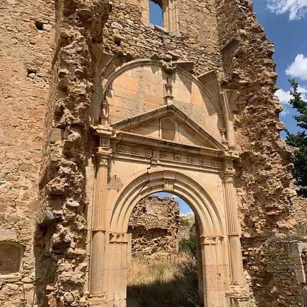

Camarillas es un pequeño municipio situado en la comarca del Altiplano de Teruel, a más de 1.200 metros de altitud. Sus orígenes se remontan a la Edad Media, cuando el asentamiento comenzó a crecer bajo la influencia de la reconquista cristiana en el territorio turolense.
A lo largo de los siglos, el pueblo ha vivido épocas de esplendor ligadas a la ganadería y la agricultura de secano, y ha sabido mantener su identidad a pesar del éxodo rural que marcó la segunda mitad del siglo XX. Hoy Camarillas es un ejemplo vivo de resistencia y cariño hacia las raíces.

Un pueblo con carácter
Las calles empedradas, la iglesia parroquial y el santuario de la Virgen del Campo son testigos mudos de la historia de Camarillas. Cada piedra guarda relatos de pastores, agricultores y familias que construyeron esta comunidad con esfuerzo y generosidad.
El cementerio viejo, el lavadero y los antiguos corrales son vestigios de una forma de vida que se resiste a desaparecer y que la asociación se esfuerza por documentar y preservar.
Hitos importantes
Siglo XIII
Primeras menciones documentales
Camarillas aparece en documentos de la Corona de Aragón vinculados al proceso de repoblación del territorio turolense.
Siglo XVI
Construcción de la iglesia parroquial
Se levanta el templo que preside el pueblo, con elementos renacentistas y mudéjares típicos del sur de Aragón.
Siglo XVIII
Auge ganadero
Camarillas vive su momento de mayor prosperidad económica gracias a la lana y la trashumancia, con rebaños que recorrían las cañadas reales.
1936 – 1939
Guerra Civil
El frente de Teruel afecta directamente a la zona. Camarillas sufre los efectos del conflicto bélico pero consigue preservar gran parte de su patrimonio.
Años 60 – 70
El éxodo rural
Como tantos pueblos de la España interior, Camarillas pierde gran parte de su población, que emigra a las ciudades en busca de oportunidades.
1992
Fundación de la Asociación Camerón
Un grupo de vecinos y camarillenses de corazón fundan la asociación para dinamizar el pueblo, organizar actividades y mantener viva la cultura local.
2010
Rehabilitación del salón social
Gracias al esfuerzo colectivo y a subvenciones, se rehabilita el antiguo salón del pueblo, convertido en centro de actividades y reuniones.
Actualidad
Camarillas sigue vivo
Con una agenda cultural activa, fiestas patronales cada verano y una comunidad conectada, el pueblo demuestra que los pequeños lugares siguen teniendo mucho que ofrecer.
¿Conoces alguna historia del pueblo?
Si tienes fotografías antiguas, documentos o anécdotas que quieras compartir, nos encantaría escucharte.
Contáctanos